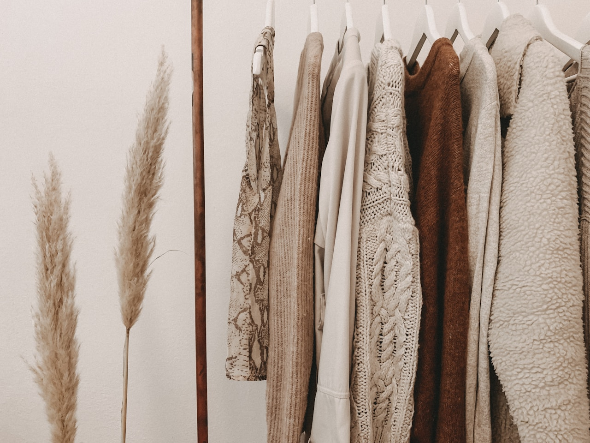

1. The Rise and Environmental Cost of Petrochemical Colorants
Prior to the mid-19th century, every textile worn by humanity derived its color directly from botanical flora, tree barks, leaves, roots, or earth minerals. The invention of synthetic aniline dyes in 1856 transformed global manufacturing, delivering hyper-saturated, inexpensive colors at the catastrophic cost of toxic chemical effluent, heavy metal contamination, and plastic polymer coatings on natural yarns.
At Amber Garb Quest, we view botanical dyeing not as an antiquated historical curiosity, but as the pinnacle of modern sustainable couture. Plant dyes do not create impermeable synthetic barriers upon cloth; instead, they bond chemically with protein and cellulose fibers at the molecular level, preserving the natural breathability and imparting a multidimensional luster that petrochemical dyes cannot match.
2. Molecular Chemistry of Natural Dyestuffs
Botanical pigments belong to complex organic chemical families—anthraquinones, flavonoids, naphthoquinones, and tannins. Unlike synthetic mono-molecular dyes, a natural extract contains dozens of co-pigments. For instance, madder root contains not only alizarin (which produces clear red) but also purpurin, rubiadin, and munjistin. These secondary compounds absorb and scatter light across multiple wavelengths, creating an optical richness known to artists as "chromatic vibration."
3. Botanical Sources for the Amber Palette
To produce our signature range of amber, terracotta, ochre, and warm earth hues, our atelier utilizes specific non-toxic botanical dyestuffs harvested sustainably from regenerative agricultural partners:
| Plant Dyestuff | Active Chemical Pigment | Resulting Chromatic Tone | Lightfastness Rating |
|---|---|---|---|
| Madder Root (Rubia tinctorum) | Alizarin & Purpurin | Deep terracotta, burnt brick, warm coral | Excellent (Grade 4–5) |
| Wild Yellow Onion Skins (Allium cepa) | Quercetin flavonoid | Brilliant golden amber, warm brass | Very Good (Grade 4) |
| Black Walnut Hulls (Juglans nigra) | Juglone naphthoquinone | Rich bronze, roasted umber, dark chestnut | Exceptional (Grade 5) |
| Pomegranate Rinds (Punica granatum) | Ellagitannins | Sun-drenched ochre, antique gold | Excellent (Grade 4–5) |
| Marigold Blossoms (Tagetes) | Lutein carotenoids | Warm honey yellow, radiant sunburst | Good (Grade 3–4) |
4. The Chemistry of Natural Mordanting
For plant pigments to achieve commercial-grade light-fastness and wash-fastness on organic textiles, they require a mordant—a naturally occurring mineral salt that forms a coordination complex between the dye molecule and the fiber's chemical backbone.
We strictly utilize food-grade Potassium Aluminum Sulfate (alum) paired with cream of tartar for cellulose fibers (linen, organic cotton) and protein fibers (virgin wool, mulberry silk). To shift amber tones toward deep antique bronze or earthy ochre-olive, we introduce micro-dilutions of iron water (ferrous sulfate derived from soaking clean iron in water and vinegar), which shifts the pigment values without synthetic toxic chemicals.
5. The Patient Multi-Stage Dyeing Protocol
Our dyeing process is slow, deliberate, and entirely non-toxic:
- Neutral Scouring: Raw organic fabrics are gently simmered with natural castile soap and soda ash to remove natural plant waxes and pectins, ensuring uniform dye uptake.
- Pre-Mordanting Bath: The scoured fabric is soaked in an alum-mordant bath for 24 hours at controlled temperatures, allowing mineral ions to bond evenly throughout the core of each yarn.
- Slow Botanical Extraction: Dried madder roots, onion skins, or walnut hulls are gently simmered below the boiling point for multiple hours to extract pure water-soluble pigments without scorching delicate tannins.
- Submersion & Patina Immersion: The mordanted fabric is submerged in the warm dye vat for 24 to 48 hours, absorbing the botanical bath until the precise amber saturation is achieved.
- River Water Rinse & Shade Drying: The dyed bolts are thoroughly rinsed in pH-neutral water and dried in open-air shade away from harsh direct sunlight.
6. Water Stewardship and Closed-Loop Recycling
Industrial synthetic dye houses consume billions of gallons of fresh water and dump untreated carcinogenic azo-dye waste into rivers across the developing world. In stark contrast, our botanical dye studio operates on a closed-loop water filtration system. Because our dye baths contain only food-grade plant extracts and minerals, exhausted dye water is neutralized and safely utilized for agricultural irrigation on our botanical test farm.
7. The Living Patina of Botanical Colors
Unlike synthetic clothing that fades into dull, chalky grayness, botanically dyed garments age with breathtaking grace. Much like fine vegetable-tanned leather, aged parchment, or hand-knotted oriental rugs, the colors soften uniformly, acquiring subtle tonal variations that reflect the wearer's daily life journeys.
Under varying light conditions—such as the blue light of dusk versus the warm rays of sunset—botanically dyed textiles exhibit optical shifts that make the garment feel alive and responsive to its environment.
8. Caring for Botanically Dyed Garments
To ensure your botanical amber pieces retain their vibrant depth across decades, adhere to these simple atelier guidelines:
- Always wash in cool water using gentle, pH-neutral, plant-based laundry cleansers free from bleach, optical brighteners, and synthetic enzymes.
- Never dry garments in direct, harsh midday sunlight. Dry flat in a shaded, well-ventilated space.
- Store garments in dark, breathable cotton garment bags when not in seasonal rotation.
- Avoid spraying acidic citrus perfumes directly onto natural dyed fabrics; apply fragrances to pulse points before dressing.
9. Frequently Asked Questions About Botanical Dyes
10. Conclusion: The Harmony of Nature and Couture
Botanical dyeing is more than an aesthetic preference; it is a profound philosophical reconnection with the earth's natural rhythms. By wearing colors extracted from roots, bark, and blossoms, we honor centuries of artisan wisdom and celebrate the living beauty of sustainable high fashion.
11. Advanced Over-Dyeing Techniques for Multidimensional Tones
One of the most revered practices in master botanical color houses is the art of sequential over-dyeing. By submerging a textile first in a bath of wild onion skins (rich in quercetin yellow) and subsequently dipping it into a light madder root decoction (rich in alizarin red), our colorists achieve a radiant golden-terracotta amber that cannot be produced via single-vat immersion.
This optical complexity allows the garment to shift tone under changing ambient illumination: glowing with golden honey hues beneath warm indoor incandescent lighting, while revealing rich terracotta earthiness in crisp outdoor overcast skies.
12. Historical Guild Traditions and Sustainable Extraction
Throughout medieval and renaissance Europe, master dyers belonged to specialized artisanal guilds that guarded botanical recipes with strict quality standards. Madder growers in France and the Low Countries were subject to rigorous soil purity regulations to ensure consistent root tannin concentrations. By partnering with small-scale heritage agricultural cooperatives today, Amber Garb Quest honors these ancient standards while providing fair living wages to organic farming communities.